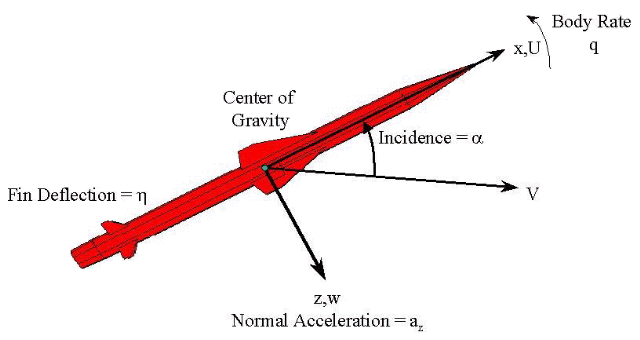

Three-degree-of-freedom Guided
Missile Simulation
This demonstration illustrates the process of designing and simulating a
three-degrees-of-freedom missile guidance system using Simulink and the Aerospace Blockset.
The Aerospace Blockset documentation contains a case study covering
the following topics:
- Modeling Airframe Dynamics
Implement atmospheric equations and the equations of motion in the missile airframe
- Modeling a Classical Three-Loop Autopilot
Design the missile autopilot to control the acceleration normal to the missile body
- Modeling the Homing Guidance Loop
Design the homing guidance loop to track the target and generate the demands that are passed to the autopilot
- Simulating the Missile Guidance System
Simulate model and evaluate system performance
- References
